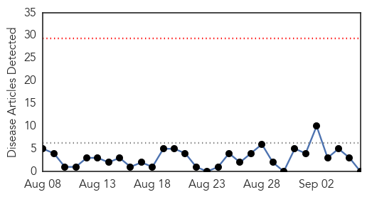
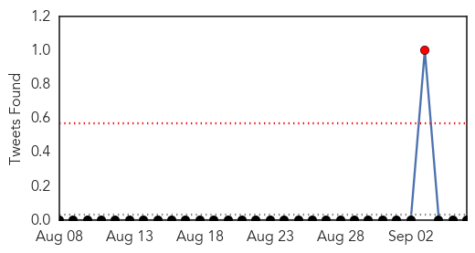
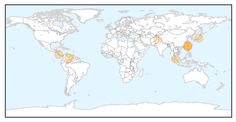

Hepatitis
30-Day Web Trend
0 alerts, 0 warnings

30-Day Twitter Trend
1 alerts, 0 warnings

Article Locations

Article Confidences

Top Articles:
-
No articles found for Sep 06, 2015
Top Tweets:
-
No tweets found for Sep 06, 2015
Dengue Fever
30-Day Web Trend
1 alerts, 0 warnings
30-Day Twitter Trend
4 alerts, 0 warnings

Article Locations
Article Confidences

Top Articles:
- 0.999
- Colombia vector borne disease update: Chagas disease, chikungunya, dengue fever and leishmaniasis
- 0.988
- CDC urges caution amid dengue fever outbreak in Southeast Asia
- 0.972
- Dengue fever outbreak in Tainan could tail off at month's end: CDC
- 0.964
- Dengue in Tainan could tail off by month-end: CDC
- 0.846
- News on Costa Rica, Business News, Opinion, Sports, Entertainment and More
- 0.820
- Taiwan CDC expects dengue outbreak to subside in late September
- 0.758
- Alarming rise in dengue cases
- 0.649
- Over 5000 Infected with Dengue Fever in Taiwan
- 0.632
- Gondal for stringent steps to check dengue fever spread
Top Tweets:
-
No tweets found for Sep 06, 2015